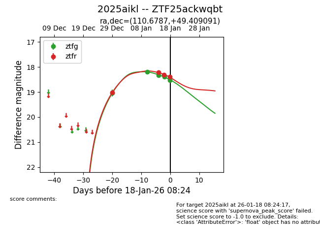
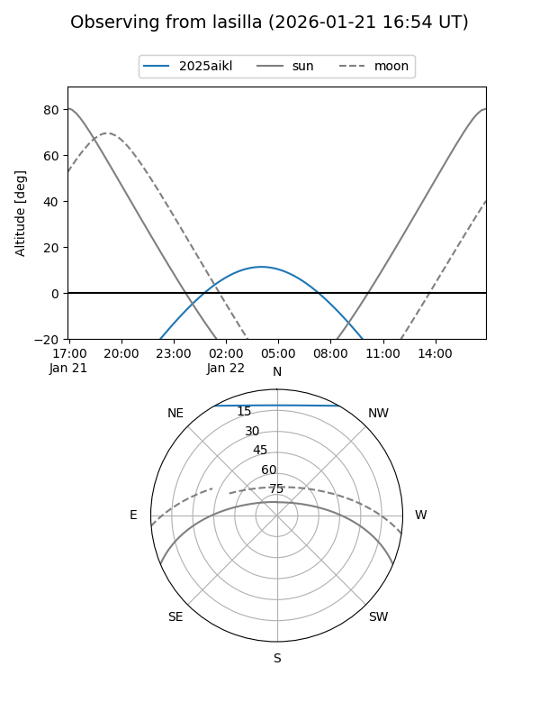
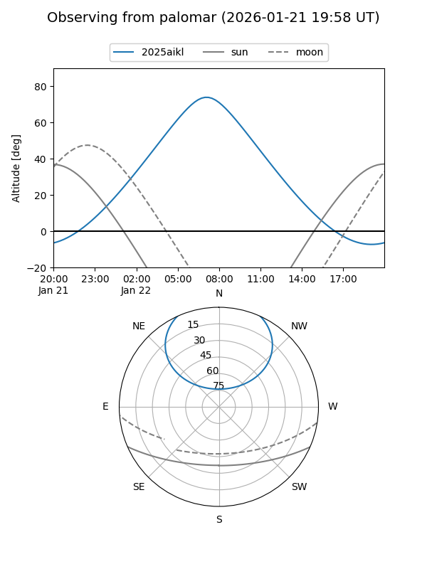
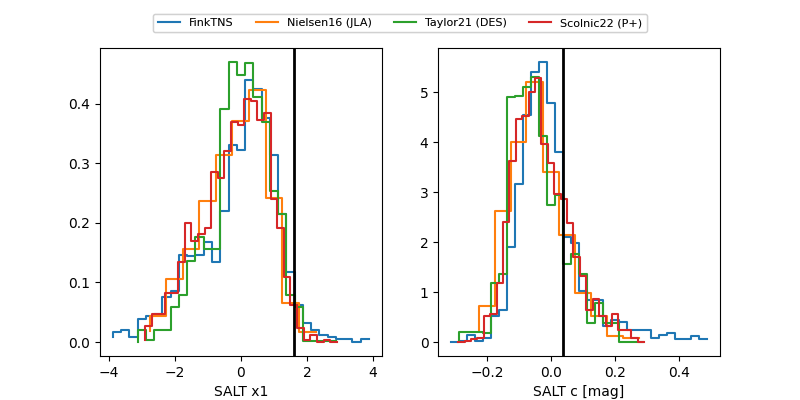

2025aikl
Target 2025aikl at 2026-01-22 15:21
Aliases and brokers:
FINK: link
Lasair: link
ALeRCE: link
TNS: link
YSE: link
alt names
ZTF25ackwqbt (ztf,fink_ztf)
2025aikl (tns,yse)
ATLAS25qlg (atlas)
Coordinates:
equatorial (ra, dec) = 110.6787,+49.40909
equatorial (HMS+DMS) = 07:22:42.89,+49:24:32.73
galactic (l, b) = (168.3407,+25.15349)
Flags:
confirmed ia
likely cv
Photometry:
last atlasc=18.41, atlaso=18.70, ztfg=18.66, ztfr=18.53
1 atlasc, 4 atlaso, 6 ztfg, 5 ztfr detections
Lightcurve

Visibility


Additional plots
